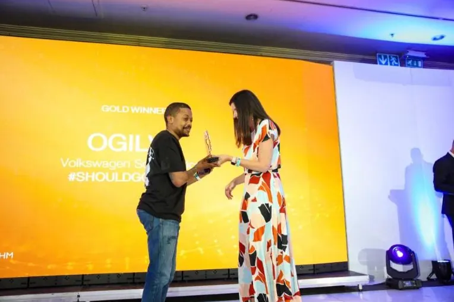
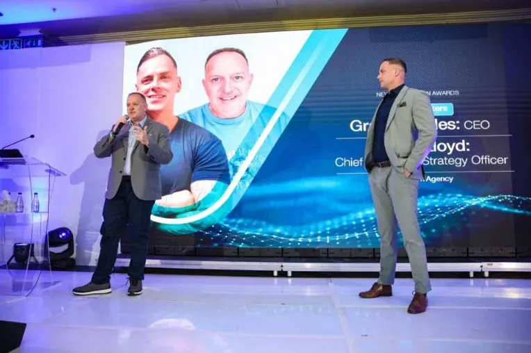
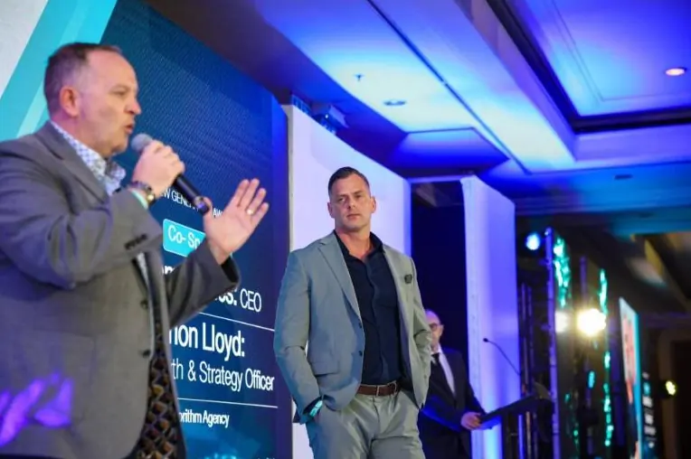

Award Win · BronzeNew Generation Awards · 29 September 2025
Algorithm wins Best Use of AI in Marketing at the New Generation Awards 2025.
Algorithm Agency and Mobiclicks took Bronze for "Best Use of AI in a Marketing Campaign by an Agency" for our work with BUCO - the first time the South African building and construction industry has been recognised at the awards for AI innovation. Coverage on BizCommunity.



On stage at the New Generation Awards · September 2025
The campaign
Real-time consumer intent, turned into in-store footfall.
For BUCO - one of South Africa's largest building and construction retailers - Algorithm partnered with Mobiclicks to design a campaign that didn't just target a demographic, but engineered around real consumer intent signals as they happened.
The campaign leveraged advanced AI to identify two distinct intent moments. The first used Mirrors, a video engagement signal layer, to identify consumers actively watching content related to building, renovation and home improvement. The second used Blis, a location proximity layer, to identify when those same audiences were physically near BUCO's competitor stores.
The result wasn't a broad-cast campaign hoping for relevance. It was a precision system: when intent signals lit up, the campaign activated. When proximity was high, the message intensified. AI did the work of joining the signals; the campaign delivered the message at the exact right moment in the buyer journey.
Performance reflected the precision. 3.4 million impressions delivered to genuinely in-market audiences. 28,467 clicks. A 1.29% click-through rate on OpenWeb - 13× industry benchmark. A 1.02% location-based click-through rate - double the industry benchmark. The campaign effectively drove in-store footfall to BUCO retail locations, with measurable lift attributable to AI-led targeting.
What was said
On the win, on the work, on what comes next.
"We're delighted to celebrate this award alongside BUCO and MobiClicks. That it's for AI makes it even more meaningful. AI may be a new horizon for many, but it's embedded in Algorithm's DNA and how we solve real business problems."
- Graeme Stiles, CEO & Founder · Algorithm
"As a brand that combines experience with innovation to drive real results, we are proud to be the very first in the building and construction industry to be recognised for such innovation."
- Tumi Mphelo, Brand & Advertising Manager · BUCO
Why this matters
AI isn't a horizon for Algorithm. It's already operational.
The New Generation Awards recognise the most innovative work in South African marketing, judged by industry peers across the brand and agency landscape. Winning in the AI category - and being the first agency in the building and construction sector to do so - confirms what Algorithm has been telling clients for two years: AI is not a future capability to plan for. It is an operational capability that, deployed properly, delivers commercial outcomes today.
The BUCO campaign exemplified the approach. Real consumer intent signals identified by AI. Audiences activated at the moment of in-market relevance. Results measured against industry benchmarks rather than vanity metrics. This is what AI-led marketing looks like when it's built into a performance system, rather than bolted on as a buzzword.
It's the same approach Algorithm has since extended into Generative Engine Optimisation (GEO) - building AI visibility for our clients so that when buyers ask ChatGPT, Gemini, Perplexity or Google AI Overviews to recommend a brand in their category, the answer is the one we've engineered.
Read the full announcement
Algorithm Agency and Mobiclicks celebrate a New Generation Awards win for data-driven marketing
Published on BizCommunity, 29 September 2025. The full announcement covers the campaign mechanics, the AI tooling that drove targeting precision, and the broader implications for the South African marketing industry.
Read on BizCommunity← All press features|BizCommunity: Lighthouse GEO launch|CNBC Africa: GEO|GEO Agency →
Ready to turn potential into performance?
If your marketing feels active but growth feels flat, the issue isn't your channels. It's the system. Algorithm fixes the system.